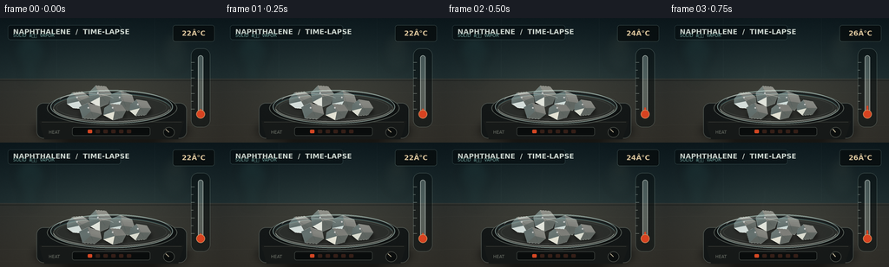
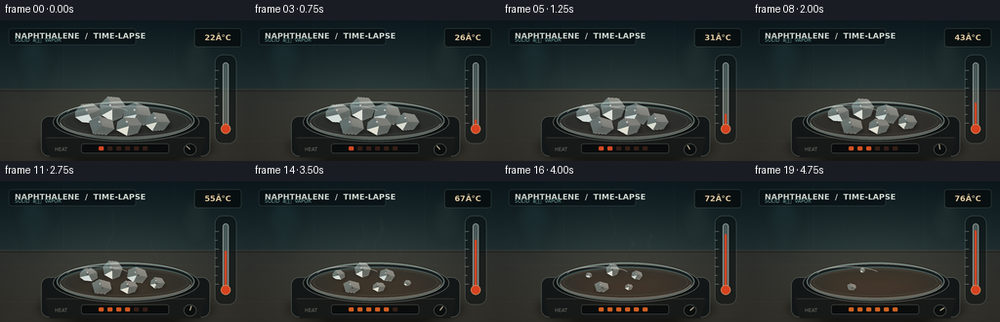
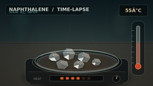

CODING AGENTS AS PIXEL WORLD MODELS
traex/GPT-5.6-Sol · phygen_117
点击播放 · 原生 RGB 像素
逐轮保存的候选
回放视频、检查图与代码变化。
每份候选均可单独播放。实际图片检查记录在下方工具轨迹中。
候选 01播放与检查图
点击播放 · 原生 RGB 像素


展开代码变化
--- 上一保存版本
+++ 本次保存版本
@@ -0,0 +1,261 @@
+from pathlib import Path
+import math
+import numpy as np
+from PIL import Image, ImageDraw, ImageFont, ImageFilter
+import artifact_io
+
+W, H, N = 256, 144, 20
+SS = 4
+SW, SH = W * SS, H * SS
+ROOT = Path(__file__).resolve().parent
+rng = np.random.default_rng(117)
+
+# Fonts are used only for compact scientific annotations.
+def font(size, bold=False):
+ candidates = [
+ "/usr/share/fonts/truetype/dejavu/DejaVuSans-Bold.ttf" if bold else "/usr/share/fonts/truetype/dejavu/DejaVuSans.ttf",
+ "/usr/share/fonts/truetype/liberation2/LiberationSans-Bold.ttf" if bold else "/usr/share/fonts/truetype/liberation2/LiberationSans-Regular.ttf",
+ ]
+ for p in candidates:
+ if Path(p).exists():
+ return ImageFont.truetype(p, size * SS)
+ return ImageFont.load_default()
+
+FONT_TITLE = font(8, True)
+FONT_SMALL = font(5, False)
+FONT_TEMP = font(8, True)
+
+def S(v):
+ return int(round(v * SS))
+
+def box(vals):
+ return tuple(S(v) for v in vals)
+
+def points(vals):
+ return [(S(x), S(y)) for x, y in vals]
+
+def rgba_layer():
+ return Image.new("RGBA", (SW, SH), (0, 0, 0, 0))
+
+def rounded(draw, xy, radius, fill, outline=None, width=1):
+ draw.rounded_rectangle(box(xy), radius=S(radius), fill=fill, outline=outline, width=S(width))
+
+def base_scene():
+ # Fixed, subtly textured charcoal/teal laboratory environment.
+ y, x = np.mgrid[0:SH, 0:SW]
+ horizon = S(70)
+ bg_top = np.array([13., 26., 31.])
+ bg_mid = np.array([29., 45., 48.])
+ a = np.clip(y / horizon, 0, 1)[..., None]
+ arr = bg_top * (1-a) + bg_mid * a
+ # Countertop beneath the horizon, with a warm pool of illumination.
+ ctr = np.array([44., 47., 45.]) + ((y-horizon).clip(0) / max(1, SH-horizon))[..., None] * np.array([8., 3., -1.])
+ arr = np.where((y >= horizon)[..., None], ctr, arr)
+ glow = np.exp(-(((x-S(127))/S(108))**2 + ((y-S(89))/S(53))**2))
+ arr += glow[..., None] * np.array([15., 14., 10.])
+ fixed_noise = rng.normal(0, 1.35, (SH, SW, 1))
+ arr += fixed_noise
+ arr = np.clip(arr, 0, 255).astype(np.uint8)
+ im = Image.fromarray(arr, "RGB").convert("RGBA")
+
+ # Defocused background lab glass and indicator lamps.
+ blur = rgba_layer(); d = ImageDraw.Draw(blur, "RGBA")
+ d.ellipse(box((17,18,52,56)), fill=(35,75,77,55), outline=(112,161,157,35), width=S(1))
+ d.rectangle(box((25,37,44,75)), fill=(37,74,73,34))
+ d.ellipse(box((185,14,218,62)), fill=(69,83,76,28), outline=(151,171,151,22), width=S(1))
+ d.ellipse(box((31,26,35,30)), fill=(153,217,183,90))
+ d.ellipse(box((199,27,205,33)), fill=(233,177,91,65))
+ blur = blur.filter(ImageFilter.GaussianBlur(S(5.5)))
+ im = Image.alpha_composite(im, blur)
+
+ # Wall seams and bench horizon.
+ detail = rgba_layer(); d = ImageDraw.Draw(detail, "RGBA")
+ d.line(points([(0,70),(256,70)]), fill=(125,136,128,38), width=S(.6))
+ d.line(points([(0,72),(256,72)]), fill=(3,9,10,80), width=S(1))
+ d.line(points([(65,0),(65,68)]), fill=(106,130,131,18), width=S(.5))
+ d.line(points([(178,0),(178,68)]), fill=(106,130,131,16), width=S(.5))
+ # Fine countertop streaks.
+ for yy, alpha in [(85,12),(123,16),(137,9)]:
+ d.line(points([(0,yy),(256,yy+1)]), fill=(214,210,187,alpha), width=S(.4))
+ im = Image.alpha_composite(im, detail)
+ return im
+
+BASE = base_scene()
+
+# Irregular faceted crystal outlines, centered over a shallow watch glass.
+crystals = [
+ dict(c=(91,96), poly=[(-14,-3),(-8,-10),(4,-11),(12,-5),(13,4),(5,9),(-7,8),(-14,3)], death=.88, tint=(225,235,231)),
+ dict(c=(115,91), poly=[(-13,-5),(-5,-13),(7,-12),(14,-3),(10,8),(0,12),(-11,6)], death=1.03, tint=(238,241,232)),
+ dict(c=(140,96), poly=[(-12,-8),(-1,-12),(12,-7),(15,2),(8,11),(-5,10),(-14,3)], death=.95, tint=(219,231,228)),
+ dict(c=(161,104),poly=[(-11,-4),(-4,-10),(8,-8),(13,0),(7,8),(-5,9),(-12,3)], death=.79, tint=(232,235,222)),
+ dict(c=(104,108),poly=[(-13,-5),(-3,-10),(11,-6),(13,3),(5,9),(-9,8)], death=1.10, tint=(225,235,229)),
+ dict(c=(132,108),poly=[(-12,-4),(-5,-9),(8,-8),(13,-1),(9,7),(-2,10),(-13,4)], death=.91, tint=(242,241,226)),
+]
+
+def poly_scaled(c, poly, scale, dx=0, dy=0):
+ cx, cy = c
+ return [(S(cx + dx + px*scale), S(cy + dy + py*scale)) for px,py in poly]
+
+def draw_hotplate_and_glass(im, heat):
+ # Shadows, compact ceramic hot plate, then transparent watch glass.
+ shadow = rgba_layer(); sd = ImageDraw.Draw(shadow, "RGBA")
+ sd.ellipse(box((39,113,218,147)), fill=(0,0,0,145))
+ shadow = shadow.filter(ImageFilter.GaussianBlur(S(5)))
+ im = Image.alpha_composite(im, shadow)
+
+ hw = rgba_layer(); d = ImageDraw.Draw(hw, "RGBA")
+ rounded(d, (42,98,215,139), 8, (20,24,24,255), (91,101,96,180), .8)
+ # Front bevel and control panel.
+ d.polygon(points([(45,119),(212,119),(205,140),(51,140)]), fill=(24,27,26,255))
+ d.line(points([(48,120),(209,120)]), fill=(120,126,116,90), width=S(.6))
+ rounded(d, (83,126,173,136), 2.5, (10,13,13,255), (65,72,68,220), .7)
+ # Heat setting LEDs grow with the temperature.
+ nled = 1 + int(heat*5.99)
+ for i in range(6):
+ col = (238,77+int(35*heat),38,235) if i < nled else (68,36,26,180)
+ rounded(d, (101+i*9,129,106+i*9,133), 1, col)
+ d.ellipse(box((188,126,201,138)), fill=(12,15,15,255), outline=(100,107,100,170), width=S(.7))
+ angle = -2.4 + 1.8*heat
+ cx,cy=194.5,132
+ d.line(points([(cx,cy),(cx+5*math.cos(angle),cy+5*math.sin(angle))]), fill=(235,221,187,220), width=S(1))
+ # Heating plate, partly hidden by the glass.
+ d.ellipse(box((54,84,204,124)), fill=(15,18,18,255), outline=(95,105,99,180), width=S(1))
+ d.ellipse(box((61,88,197,121)), fill=(34+int(13*heat),35+int(5*heat),32,255), outline=(129,128,114,85), width=S(.7))
+ im = Image.alpha_composite(im, hw)
+
+ # A soft amber thermal glow appears beneath the dish, never flame-like.
+ glow = rgba_layer(); gd=ImageDraw.Draw(glow,"RGBA")
+ gd.ellipse(box((69,94,191,124)), fill=(234,105,30,int(5+25*heat)))
+ glow=glow.filter(ImageFilter.GaussianBlur(S(11)))
+ im=Image.alpha_composite(im,glow)
+
+ glass = rgba_layer(); d=ImageDraw.Draw(glass,"RGBA")
+ d.ellipse(box((58,83,199,122)), fill=(174,205,196,18), outline=(196,225,217,145), width=S(1.0))
+ d.arc(box((61,87,196,120)), 8, 174, fill=(239,250,241,120), width=S(1))
+ d.arc(box((61,87,196,120)), 190, 353, fill=(81,120,120,150), width=S(1))
+ d.ellipse(box((65,90,192,117)), outline=(218,236,226,45), width=S(.6))
+ # Bright upper-left glass glint.
+ d.arc(box((68,87,133,104)), 190, 337, fill=(255,255,246,125), width=S(.75))
+ return Image.alpha_composite(im,glass)
+
+def crystal_scale(u, death):
+ q = (u/death) ** 1.48
+ return max(0.0, (1-q)) ** .52
+
+def draw_crystals(im, u):
+ # Crystals cast shrinking contact shadows.
+ sh = rgba_layer(); d=ImageDraw.Draw(sh,"RGBA")
+ scales=[]
+ for i,c in enumerate(crystals):
+ sc=crystal_scale(u,c['death']); scales.append(sc)
+ if sc>.025:
+ cx,cy=c['c']
+ d.ellipse(box((cx-13*sc,cy-2*sc,cx+14*sc,cy+10*sc)), fill=(0,0,0,int(105*min(1,sc+.2))))
+ sh=sh.filter(ImageFilter.GaussianBlur(S(2.0)))
+ im=Image.alpha_composite(im,sh)
+
+ layer=rgba_layer(); d=ImageDraw.Draw(layer,"RGBA")
+ for i,(c,sc) in enumerate(zip(crystals,scales)):
+ if sc <= .025: continue
+ p=poly_scaled(c['c'],c['poly'],sc)
+ r,g,b=c['tint']
+ # The body stays crystalline/opaque while its exposed surfaces retreat.
+ d.polygon(p, fill=(r,g,b,242), outline=(250,252,242,250))
+ cx,cy=c['c']; poly=c['poly']
+ # Three stable planar facets, all geometrically shrinking with the body.
+ def P(px,py): return (S(cx+px*sc),S(cy+py*sc))
+ d.polygon([P(*poly[0]),P(*poly[1]),P(0,0),P(*poly[-1])], fill=(187,213,211,115))
+ d.polygon([P(*poly[1]),P(*poly[2]),P(*poly[3]),P(0,0)], fill=(255,255,246,110))
+ d.polygon([P(0,0),P(*poly[3]),P(*poly[4]),P(*poly[5])], fill=(205,219,211,100))
+ # Fine cleavage line and a recession pit become visible mid-timelapse.
+ if sc>.13:
+ d.line([P(poly[1][0]*.72,poly[1][1]*.72),P(poly[4][0]*.60,poly[4][1]*.60)], fill=(134,168,168,105), width=max(1,S(.35)))
+ if u>.22 and sc>.18:
+ pit_r=(.6+1.2*u)*min(1,sc*1.6)
+ offx=((i*7)%5-2)*.7; offy=((i*11)%5-2)*.45
+ d.ellipse(box((cx+offx-pit_r,cy+offy-pit_r*.55,cx+offx+pit_r,cy+offy+pit_r*.55)), fill=(117,154,155,85), outline=(255,255,246,80), width=max(1,S(.25)))
+ # Pinpoint specular facet.
+ d.ellipse(box((cx-3.2*sc,cy-5.2*sc,cx-1.4*sc,cy-3.6*sc)), fill=(255,255,255,190))
+ return Image.alpha_composite(im,layer), sum(s*s for s in scales)
+
+def draw_vapor(im, frame, u, mass):
+ # Sublimation is represented by translucent vapor wisps and refractive heat trails,
+ # deliberately not by liquid puddles or smoke clouds.
+ intensity = math.sin(math.pi*min(1,u))**0.7 * min(1, .45+u*1.2)
+ if intensity < .04: return im
+ vapor=rgba_layer(); d=ImageDraw.Draw(vapor,"RGBA")
+ starts=[(92,91),(114,87),(137,91),(157,99),(104,102),(131,101),(149,95)]
+ count=min(len(starts),2+int(6*u))
+ for j in range(count):
+ sx,sy=starts[j]
+ # Continuous upward motion gives the timelapse actual dynamics.
+ phase=(frame*.22+j*.37)%1.0
+ rise=8+phase*30
+ length=17+9*((j*3)%4)/3
+ coords=[]
+ for k in range(25):
+ z=k/24
+ yy=sy-rise*z-length*z
+ xx=sx+3.0*math.sin(z*5.2+j*1.3+frame*.18)+1.7*math.sin(z*11+j)
+ coords.append((S(xx),S(yy)))
+ alpha=int(17+26*intensity)
+ d.line(coords, fill=(211,231,223,alpha), width=S(1.1+0.35*(j%2)))
+ vapor=vapor.filter(ImageFilter.GaussianBlur(S(1.6)))
+ return Image.alpha_composite(im,vapor)
+
+def draw_thermometer_and_labels(im, temp, heat):
+ layer=rgba_layer(); d=ImageDraw.Draw(layer,"RGBA")
+ # Quiet title strip.
+ rounded(d,(9,8,139,25),3,(6,14,17,165),(114,148,145,75),.5)
+ d.text((S(15),S(11)),"NAPHTHALENE / TIME-LAPSE",font=FONT_TITLE,fill=(231,239,231,235))
+ d.text((S(15),S(20)),"SOLID â VAPOR",font=FONT_SMALL,fill=(135,193,185,225),anchor="lm")
+
+ # Digital temperature badge.
+ rounded(d,(199,8,247,27),3,(8,14,15,210),(121,145,137,100),.6)
+ txt=f"{int(round(temp)):02d}°C"
+ d.text((S(223),S(17.5)),txt,font=FONT_TEMP,fill=(246,220,174,245),anchor="mm")
+
+ # Glass thermometer at the right edge.
+ # Shadow and backing improve readability without becoming diagrammatic.
+ rounded(d,(220,35,242,126),8,(6,13,14,125),(169,194,183,90),.6)
+ d.rounded_rectangle(box((228,43,234,112)),radius=S(3),fill=(195,217,208,75),outline=(229,240,232,180),width=S(.7))
+ # ticks
+ for k in range(7):
+ yy=105-k*9.0
+ ln=4 if k%2==0 else 2.5
+ d.line(points([(220,yy),(220+ln,yy)]),fill=(212,226,214,145),width=S(.55))
+ # liquid column: 105 at 22C, 50 at 76C
+ top=105-55*heat
+ d.rounded_rectangle(box((230.0,top,232.0,112)),radius=S(1),fill=(232,72,35,245))
+ d.ellipse(box((226,106,236,116)),fill=(237,73,35,245),outline=(255,170,111,210),width=S(.7))
+ # Hotplate caption, tiny and unobtrusive.
+ d.text((S(56),S(132)),"HEAT",font=FONT_SMALL,fill=(157,164,151,170),anchor="lm")
+ return Image.alpha_composite(im,layer)
+
+def render_frame(i):
+ u=i/(N-1)
+ # Smooth monotonic temperature increase, 22 C to 76 C: below naphthalene's melting point.
+ heat=u*u*(3-2*u)
+ temp=22+54*heat
+ im=BASE.copy()
+ im=draw_hotplate_and_glass(im,heat)
+ im,mass=draw_crystals(im,u)
+ im=draw_vapor(im,i,u,mass)
+ im=draw_thermometer_and_labels(im,temp,heat)
+ # Subtle fixed vignette and frame grain for macro-photographic finish.
+ arr=np.asarray(im.convert("RGB"),dtype=np.float32)
+ yy,xx=np.mgrid[0:SH,0:SW]
+ vign=np.clip(1-0.12*((xx-SW/2)/(SW*.63))**2-0.10*((yy-SH/2)/(SH*.66))**2,.78,1)
+ arr*=vign[...,None]
+ frame_noise=np.random.default_rng(9000+i).normal(0,.45,(SH,SW,1))
+ arr=np.clip(arr+frame_noise,0,255).astype(np.uint8)
+ im=Image.fromarray(arr,"RGB").resize((W,H),Image.Resampling.LANCZOS)
+ return np.asarray(im,dtype=np.uint8)
+
+def main():
+ frames=np.stack([render_frame(i) for i in range(N)],axis=0)
+ artifact_io.save(frames,ROOT)
+ print(f"saved {frames.shape} RGB video; temperature 22â76°C")
+
+if __name__=="__main__":
+ main()
可观测工具轨迹
实际执行的命令与返回图片。
命令 1exit 0
/bin/bash -lc "cat prompt.txt && printf '\\n---RULES---\\n' && cat GENERATION_RULES.md && printf '\\n---SPEC---\\n' && cat task_spec.json"
命令 2exit 0
/bin/bash -lc "find . -maxdepth 2 -type f -printf '%p\\n' | sort | head -200"
命令 3exit 0
/bin/bash -lc "sed -n '1,240p' artifact_io.py"
命令 4exit 0
/bin/bash -lc "cat > generate.py <<'PY'
from pathlib import Path
import math
import numpy as np
from PIL import Image, ImageDraw, ImageFont, ImageFilter
import artifact_io
W, H, N = 256, 144, 20
SS = 4
SW, SH = W * SS, H * SS
ROOT = Path(__file__).resolve().parent
rng = np.random.default_rng(117)
# Fonts are used only for compact scientific annotations.
def font(size, bold=False):
candidates = [
\"/usr/share/fonts/truetype/dejavu/DejaVuSans-Bold.ttf\" if bold else \"/usr/share/fonts/truetype/dejavu/DejaVuSans.ttf\",
\"/usr/share/fonts/truetype/liberation2/LiberationSans-Bold.ttf\" if bold else \"/usr/share/fonts/truetype/liberation2/LiberationSans-Regular.ttf\",
]
for p in candidates:
if Path(p).exists():
return ImageFont.truetype(p, size * SS)
return ImageFont.load_default()
FONT_TITLE = font(8, True)
FONT_SMALL = font(5, False)
FONT_TEMP = font(8, True)
def S(v):
return int(round(v * SS))
def box(vals):
return tuple(S(v) for v in vals)
def points(vals):
return [(S(x), S(y)) for x, y in vals]
def rgba_layer():
return Image.new(\"RGBA\", (SW, SH), (0, 0, 0, 0))
def rounded(draw, xy, radius, fill, outline=None, width=1):
draw.rounded_rectangle(box(xy), radius=S(radius), fill=fill, outline=outline, width=S(width))
def base_scene():
# Fixed, subtly textured charcoal/teal laboratory environment.
y, x = np.mgrid[0:SH, 0:SW]
horizon = S(70)
bg_top = np.array([13., 26., 31.])
bg_mid = np.array([29., 45., 48.])
a = np.clip(y / horizon, 0, 1)[..., None]
arr = bg_top * (1-a) + bg_mid * a
# Countertop beneath the horizon, with a warm pool of illumination.
ctr = np.array([44., 47., 45.]) + ((y-horizon).clip(0) / max(1, SH-horizon))[..., None] * np.array([8., 3., -1.])
arr = np.where((y >= horizon)[..., None], ctr, arr)
glow = np.exp(-(((x-S(127))/S(108))**2 + ((y-S(89))/S(53))**2))
arr += glow[..., None] * np.array([15., 14., 10.])
fixed_noise = rng.normal(0, 1.35, (SH, SW, 1))
arr += fixed_noise
arr = np.clip(arr, 0, 255).astype(np.uint8)
im = Image.fromarray(arr, \"RGB\").convert(\"RGBA\")
# Defocused background lab glass and indicator lamps.
blur = rgba_layer(); d = ImageDraw.Draw(blur, \"RGBA\")
d.ellipse(box((17,18,52,56)), fill=(35,75,77,55), outline=(112,161,157,35), width=S(1))
d.rectangle(box((25,37,44,75)), fill=(37,74,73,34))
d.ellipse(box((185,14,218,62)), fill=(69,83,76,28), outline=(151,171,151,22), width=S(1))
d.ellipse(box((31,26,35,30)), fill=(153,217,183,90))
d.ellipse(box((199,27,205,33)), fill=(233,177,91,65))
blur = blur.filter(ImageFilter.GaussianBlur(S(5.5)))
im = Image.alpha_composite(im, blur)
# Wall seams and bench horizon.
detail = rgba_layer(); d = ImageDraw.Draw(detail, \"RGBA\")
d.line(points([(0,70),(256,70)]), fill=(125,136,128,38), width=S(.6))
d.line(points([(0,72),(256,72)]), fill=(3,9,10,80), width=S(1))
d.line(points([(65,0),(65,68)]), fill=(106,130,131,18), width=S(.5))
d.line(points([(178,0),(178,68)]), fill=(106,130,131,16), width=S(.5))
# Fine countertop streaks.
for yy, alpha in [(85,12),(123,16),(137,9)]:
d.line(points([(0,yy),(256,yy+1)]), fill=(214,210,187,alpha), width=S(.4))
im = Image.alpha_composite(im, detail)
return im
BASE = base_scene()
# Irregular faceted crystal outlines, centered over a shallow watch glass.
crystals = [
dict(c=(91,96), poly=[(-14,-3),(-8,-10),(4,-11),(12,-5),(13,4),(5,9),(-7,8),(-14,3)], death=.88, tint=(225,235,231)),
dict(c=(115,91), poly=[(-13,-5),(-5,-13),(7,-12),(14,-3),(10,8),(0,12),(-11,6)], death=1.03, tint=(238,241,232)),
dict(c=(140,96), poly=[(-12,-8),(-1,-12),(12,-7),(15,2),(8,11),(-5,10),(-14,3)], death=.95, tint=(219,231,228)),
dict(c=(161,104),poly=[(-11,-4),(-4,-10),(8,-8),(13,0),(7,8),(-5,9),(-12,3)], death=.79, tint=(232,235,222)),
dict(c=(104,108),poly=[(-13,-5),(-3,-10),(11,-6),(13,3),(5,9),(-9,8)], death=1.10, tint=(225,235,229)),
dict(c=(132,108),poly=[(-12,-4),(-5,-9),(8,-8),(13,-1),(9,7),(-2,10),(-13,4)], death=.91, tint=(242,241,226)),
]
def poly_scaled(c, poly, scale, dx=0, dy=0):
cx, cy = c
return [(S(cx + dx + px*scale), S(cy + dy + py*scale)) for px,py in poly]
def draw_hotplate_and_glass(im, heat):
# Shadows, compact ceramic hot plate, then transparent watch glass.
shadow = rgba_layer(); sd = ImageDraw.Draw(shadow, \"RGBA\")
sd.ellipse(box((39,113,218,147)), fill=(0,0,0,145))
shadow = shadow.filter(ImageFilter.GaussianBlur(S(5)))
im = Image.alpha_composite(im, shadow)
hw = rgba_layer(); d = ImageDraw.Draw(hw, \"RGBA\")
rounded(d, (42,98,215,139), 8, (20,24,24,255), (91,101,96,180), .8)
# Front bevel and control panel.
d.polygon(points([(45,119),(212,119),(205,140),(51,140)]), fill=(24,27,26,255))
d.line(points([(48,120),(209,120)]), fill=(120,126,116,90), width=S(.6))
rounded(d, (83,126,173,136), 2.5, (10,13,13,255), (65,72,68,220), .7)
# Heat setting LEDs grow with the temperature.
nled = 1 + int(heat*5.99)
for i in range(6):
col = (238,77+int(35*heat),38,235) if i < nled else (68,36,26,180)
rounded(d, (101+i*9,129,106+i*9,133), 1, col)
d.ellipse(box((188,126,201,138)), fill=(12,15,15,255), outline=(100,107,100,170), width=S(.7))
angle = -2.4 + 1.8*heat
cx,cy=194.5,132
d.line(points([(cx,cy),(cx+5*math.cos(angle),cy+5*math.sin(angle))]), fill=(235,221,187,220), width=S(1))
# Heating plate, partly hidden by the glass.
d.ellipse(box((54,84,204,124)), fill=(15,18,18,255), outline=(95,105,99,180), width=S(1))
d.ellipse(box((61,88,197,121)), fill=(34+int(13*heat),35+int(5*heat),32,255), outline=(129,128,114,85), width=S(.7))
im = Image.alpha_composite(im, hw)
# A soft amber thermal glow appears beneath the dish, never flame-like.
glow = rgba_layer(); gd=ImageDraw.Draw(glow,\"RGBA\")
gd.ellipse(box((69,94,191,124)), fill=(234,105,30,int(5+25*heat)))
glow=glow.filter(ImageFilter.GaussianBlur(S(11)))
im=Image.alpha_composite(im,glow)
glass = rgba_layer(); d=ImageDraw.Draw(glass,\"RGBA\")
d.ellipse(box((58,83,199,122)), fill=(174,205,196,18), outline=(196,225,217,145), width=S(1.0))
d.arc(box((61,87,196,120)), 8, 174, fill=(239,250,241,120), width=S(1))
d.arc(box((61,87,196,120)), 190, 353, fill=(81,120,120,150), width=S(1))
d.ellipse(box((65,90,192,117)), outline=(218,236,226,45), width=S(.6))
# Bright upper-left glass glint.
d.arc(box((68,87,133,104)), 190, 337, fill=(255,255,246,125), width=S(.75))
return Image.alpha_composite(im,glass)
def crystal_scale(u, death):
q = (u/death) ** 1.48
return max(0.0, (1-q)) ** .52
def draw_crystals(im, u):
# Crystals cast shrinking contact shadows.
sh = rgba_layer(); d=ImageDraw.Draw(sh,\"RGBA\")
scales=[]
for i,c in enumerate(crystals):
sc=crystal_scale(u,c['death']); scales.append(sc)
if sc>.025:
cx,cy=c['c']
d.ellipse(box((cx-13*sc,cy-2*sc,cx+14*sc,cy+10*sc)), fill=(0,0,0,int(105*min(1,sc+.2))))
sh=sh.filter(ImageFilter.GaussianBlur(S(2.0)))
im=Image.alpha_composite(im,sh)
layer=rgba_layer(); d=ImageDraw.Draw(layer,\"RGBA\")
for i,(c,sc) in enumerate(zip(crystals,scales)):
if sc <= .025: continue
p=poly_scaled(c['c'],c['poly'],sc)
r,g,b=c['tint']
# The body stays crystalline/opaque while its exposed surfaces retreat.
d.polygon(p, fill=(r,g,b,242), outline=(250,252,242,250))
cx,cy=c['c']; poly=c['poly']
# Three stable planar facets, all geometrically shrinking with the body.
def P(px,py): return (S(cx+px*sc),S(cy+py*sc))
d.polygon([P(*poly[0]),P(*poly[1]),P(0,0),P(*poly[-1])], fill=(187,213,211,115))
d.polygon([P(*poly[1]),P(*poly[2]),P(*poly[3]),P(0,0)], fill=(255,255,246,110))
d.polygon([P(0,0),P(*poly[3]),P(*poly[4]),P(*poly[5])], fill=(205,219,211,100))
# Fine cleavage line and a recession pit become visible mid-timelapse.
if sc>.13:
d.line([P(poly[1][0]*.72,poly[1][1]*.72),P(poly[4][0]*.60,poly[4][1]*.60)], fill=(134,168,168,105), width=max(1,S(.35)))
if u>.22 and sc>.18:
pit_r=(.6+1.2*u)*min(1,sc*1.6)
offx=((i*7)%5-2)*.7; offy=((i*11)%5-2)*.45
d.ellipse(box((cx+offx-pit_r,cy+offy-pit_r*.55,cx+offx+pit_r,cy+offy+pit_r*.55)), fill=(117,154,155,85), outline=(255,255,246,80), width=max(1,S(.25)))
# Pinpoint specular facet.
d.ellipse(box((cx-3.2*sc,cy-5.2*sc,cx-1.4*sc,cy-3.6*sc)), fill=(255,255,255,190))
return Image.alpha_composite(im,layer), sum(s*s for s in scales)
def draw_vapor(im, frame, u, mass):
# Sublimation is represented by translucent vapor wisps and refractive heat trails,
# deliberately not by liquid puddles or smoke clouds.
intensity = math.sin(math.pi*min(1,u))**0.7 * min(1, .45+u*1.2)
if intensity < .04: return im
vapor=rgba_layer(); d=ImageDraw.Draw(vapor,\"RGBA\")
starts=[(92,91),(114,87),(137,91),(157,99),(104,102),(131,101),(149,95)]
count=min(len(starts),2+int(6*u))
for j in range(count):
sx,sy=starts[j]
# Continuous upward motion gives the timelapse actual dynamics.
phase=(frame*.22+j*.37)%1.0
rise=8+phase*30
length=17+9*((j*3)%4)/3
coords=[]
for k in range(25):
z=k/24
yy=sy-rise*z-length*z
xx=sx+3.0*math.sin(z*5.2+j*1.3+frame*.18)+1.7*math.sin(z*11+j)
coords.append((S(xx),S(yy)))
alpha=int(17+26*intensity)
d.line(coords, fill=(211,231,223,alpha), width=S(1.1+0.35*(j%2)))
vapor=vapor.filter(ImageFilter.GaussianBlur(S(1.6)))
return Image.alpha_composite(im,vapor)
def draw_thermometer_and_labels(im, temp, heat):
layer=rgba_layer(); d=ImageDraw.Draw(layer,\"RGBA\")
# Quiet title strip.
rounded(d,(9,8,139,25),3,(6,14,17,165),(114,148,145,75),.5)
d.text((S(15),S(11)),\"NAPHTHALENE / TIME-LAPSE\",font=FONT_TITLE,fill=(231,239,231,235))
d.text((S(15),S(20)),\"SOLID â VAPOR\",font=FONT_SMALL,fill=(135,193,185,225),anchor=\"lm\")
# Digital temperature badge.
rounded(d,(199,8,247,27),3,(8,14,15,210),(121,145,137,100),.6)
txt=f\"{int(round(temp)):02d}°C\"
d.text((S(223),S(17.5)),txt,font=FONT_TEMP,fill=(246,220,174,245),anchor=\"mm\")
# Glass thermometer at the right edge.
# Shadow and backing improve readability without becoming diagrammatic.
rounded(d,(220,35,242,126),8,(6,13,14,125),(169,194,183,90),.6)
d.rounded_rectangle(box((228,43,234,112)),radius=S(3),fill=(195,217,208,75),outline=(229,240,232,180),width=S(.7))
# ticks
for k in range(7):
yy=105-k*9.0
ln=4 if k%2==0 else 2.5
d.line(points([(220,yy),(220+ln,yy)]),fill=(212,226,214,145),width=S(.55))
# liquid column: 105 at 22C, 50 at 76C
top=105-55*heat
d.rounded_rectangle(box((230.0,top,232.0,112)),radius=S(1),fill=(232,72,35,245))
d.ellipse(box((226,106,236,116)),fill=(237,73,35,245),outline=(255,170,111,210),width=S(.7))
# Hotplate caption, tiny and unobtrusive.
d.text((S(56),S(132)),\"HEAT\",font=FONT_SMALL,fill=(157,164,151,170),anchor=\"lm\")
return Image.alpha_composite(im,layer)
def render_frame(i):
u=i/(N-1)
# Smooth monotonic temperature increase, 22 C to 76 C: below naphthalene's melting point.
heat=u*u*(3-2*u)
temp=22+54*heat
im=BASE.copy()
im=draw_hotplate_and_glass(im,heat)
im,mass=draw_crystals(im,u)
im=draw_vapor(im,i,u,mass)
im=draw_thermometer_and_labels(im,temp,heat)
# Subtle fixed vignette and frame grain for macro-photographic finish.
arr=np.asarray(im.convert(\"RGB\"),dtype=np.float32)
yy,xx=np.mgrid[0:SH,0:SW]
vign=np.clip(1-0.12*((xx-SW/2)/(SW*.63))**2-0.10*((yy-SH/2)/(SH*.66))**2,.78,1)
arr*=vign[...,None]
frame_noise=np.random.default_rng(9000+i).normal(0,.45,(SH,SW,1))
arr=np.clip(arr+frame_noise,0,255).astype(np.uint8)
im=Image.fromarray(arr,\"RGB\").resize((W,H),Image.Resampling.LANCZOS)
return np.asarray(im,dtype=np.uint8)
def main():
frames=np.stack([render_frame(i) for i in range(N)],axis=0)
artifact_io.save(frames,ROOT)
print(f\"saved {frames.shape} RGB video; temperature 22â76°C\")
if __name__==\"__main__\":
main()
PY
python generate.py
ls -lh pixels.npz inspection.png index.html frames/00.png frames/19.png"视觉工具实际返回图片 1

视觉工具实际返回图片 2

保存候选 1 份；完成命令 4 次；可验证图片返回 2 张。原始 API 响应与完整日志保留在本地。